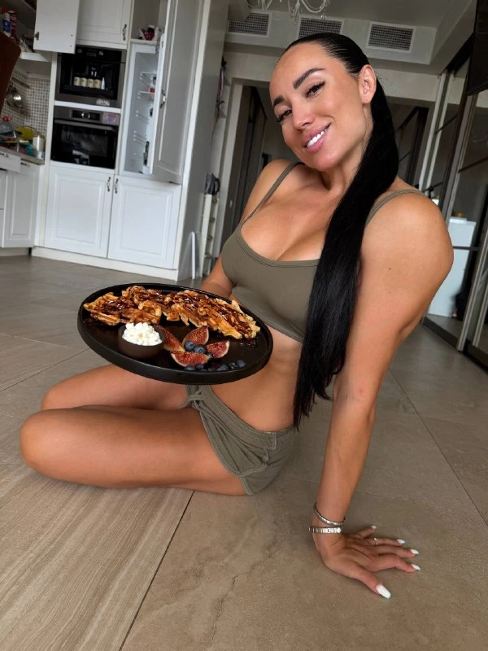
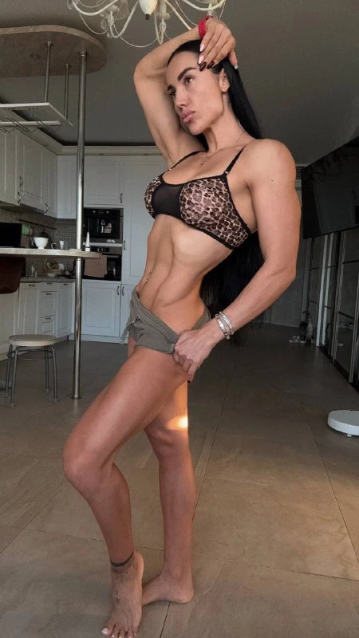
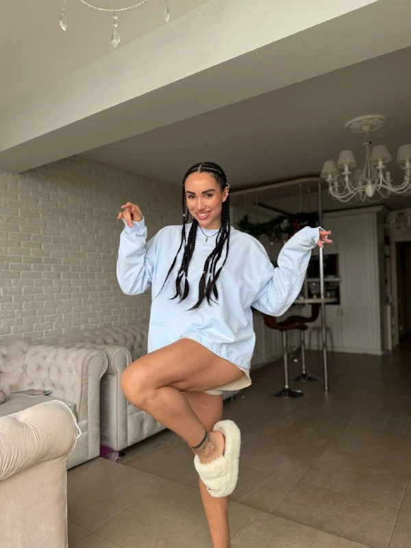
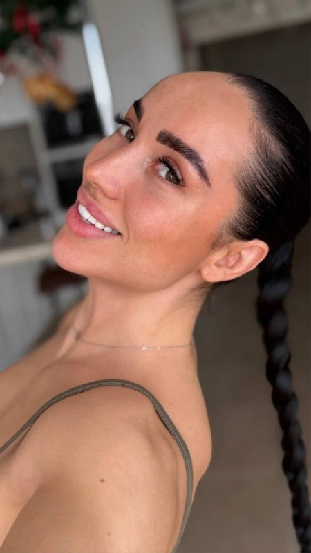
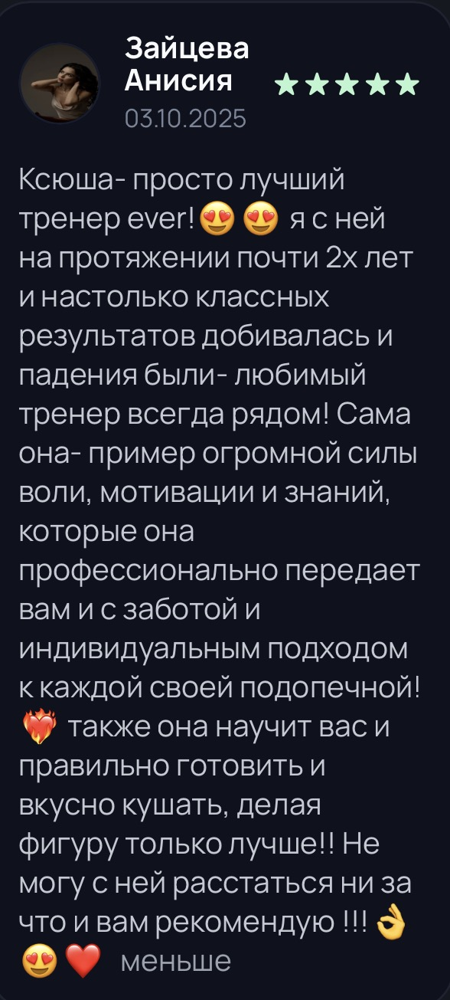
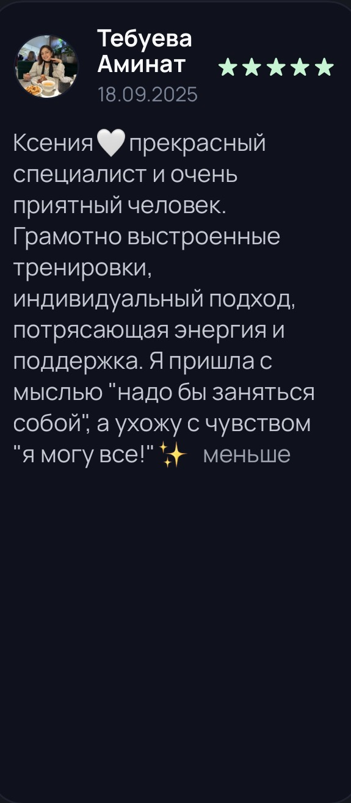
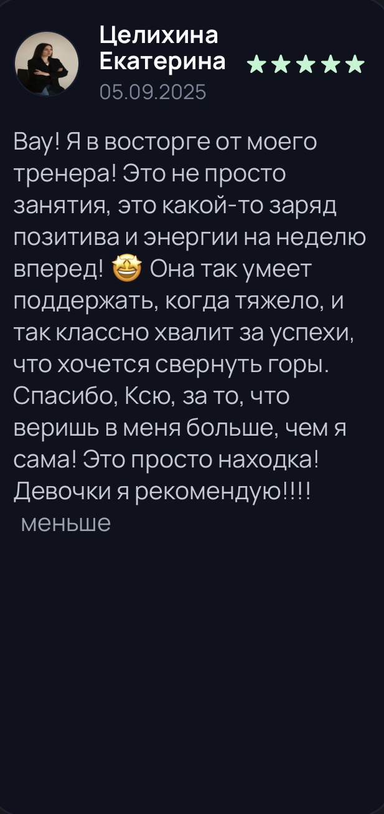
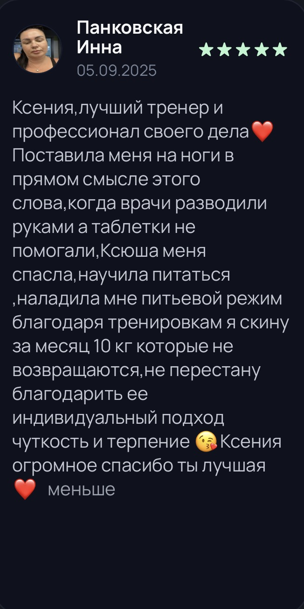
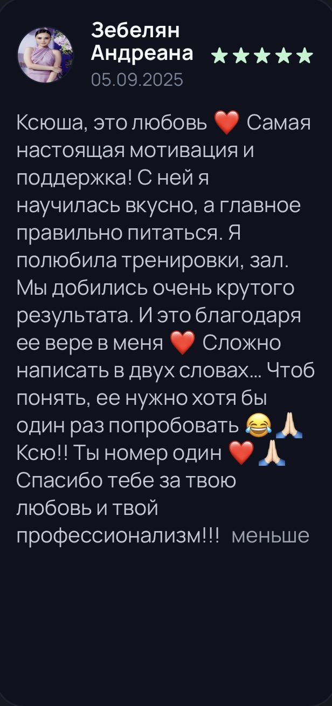
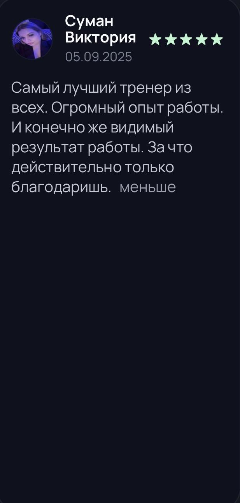

Только начинаешь или возвращаешься после паузы
Начни с зарядок и растяжек дома. Не нужно покупать абонемент и подстраиваться под расписание зала.
Онлайн-марафон с Ксенией Казанковой
Как питаться, чтобы стать стройнее — без голода и вечного подсчёта калорий.
Кисуль, я собрала тебе меню на 14 дней с готовыми порциями и добавила домашние занятия. Для тех, кто устал начинать заново и хочет наконец разобраться с питанием.

Ксения Казанкова
Автор марафона · фитнес-тренерГотовое меню
на каждый день
4 зарядки, 2 растяжки
2 занятия для осанки
1400 / 1600 / 1800 / 2000
ккал на выбор
Полная стоимость
всей программы
Что такое «Легче, Кисуль!»
Выбираешь рацион, готовишь по рецептам и включаешь домашние занятия по расписанию. Я подготовила материалы, а ты выбираешь удобное время. Марафон проходишь самостоятельно, без отчётов и проверки заданий.
Сочетать питание с домашними занятиями по готовому расписанию, а не искать отдельную диету и тренировку.
Калорийность и порции уже указаны в рецептах. Выбирай рацион и готовь по граммовкам.
Два занятия для осанки помогут уделить спине отдельное внимание. Покажу упражнения, которые можно повторять дома.
Оставить в обычном дне место для своего тела, даже когда работа и домашние дела никуда не делись.
Начать с доступных домашних занятий и понять, что для этого не нужно сначала прийти в идеальную форму.
Не начинать всё заново из-за одного пропущенного дня. Продолжай с того места, где остановилась.
Результаты индивидуальны. Марафон даёт готовый план, но не обещает определённого изменения веса за 14 дней.
14 дней, чтобы попробовать по-другому
Вкусно поесть. Подвигаться.
И не превращать заботу о себе
в ещё одну работу.
Рацион уже собран.Калорийность и граммовки уже указаны. Следуй меню без ежедневных подсчётов.
Движение — дома.Зарядки и растяжки без дороги в зал.
Пропуск — не конец.В расписании есть отдых, а к занятиям можно вернуться.
Узнаёшь себя? Я собрала программу для тех, кому хочется заняться собой без резкой смены всей жизни.
Начни с зарядок и растяжек дома. Не нужно покупать абонемент и подстраиваться под расписание зала.
Хочется есть нормальную еду и заниматься без требования выложиться до последней капли сил.
Открываешь холодильник и снова не знаешь, что приготовить. Здесь рецепты и порции уже расписаны.
Делаешь многое для других, а себя оставляешь на потом. Хочется найти время и на свои желания.
Видео, рецепты и расписание в одном месте. Выбирай удобное время и открывай нужный материал.
По две зарядки на каждой неделе. Включай видео и занимайся дома в своём темпе.
2 растяжки и 2 занятия для осанки за марафон. Чередуй их с зарядками и днями отдыха.
Четыре варианта: 1400, 1600, 1800 и 2000 ккал. В каждом рецепте — продукты, граммовки и шаги приготовления.
Поможет предварительно выбрать вариант питания. Дальше открывай материалы и следуй своему плану.
Ещё семь дней доступа к материалам, зарядкам и растяжкам после основной программы.
Марафон для тех, кто хочет начать с понятного плана еды и движения. Без домашних заданий, отчётов и личного сопровождения.
14 дней + неделя доступа в подарокЧто меняется в повседневности
Не нужно каждый вечер искать новый рецепт. Есть меню, понятные порции и список ингредиентов.
Вафли, крем-супы и другие осенние блюда. Забота о питании не обязана сводиться к скучной гречке.
План помогает выделить время на зарядку и растяжку. Две недели — возможность попробовать регулярность.
Твой план на две недели
Две зарядки, одна растяжка и одно занятие для осанки в неделю. Каждый день — готовый рацион.
На второй неделе сохраняем ритм: всего 4 зарядки, 2 растяжки и 2 занятия для осанки.


Подготовь продукты заранее и оставь часть блюда на следующий приём пищи. Не нужно каждый раз начинать готовку с нуля.
Посмотри рецепты до закупки и собери корзину под свой бюджет. Специальные фитнес-продукты не нужны. Продукты покупаешь отдельно.

Почему Ксюша Казанкова
«Кисуль, вкусно поела, подвигалась, почувствовала себя хорошо — ну кайф же!»
Я люблю спорт за силу, уверенность и удовольствие от своего тела. И хочу, чтобы ты тоже почувствовала этот кайф, начиная с посильных занятий дома.
Вкусная еда не награда за тренировку. А пропуск не повод себя ругать. Подбирай нагрузку по силам и возвращайся к занятиям, когда готова.
Твоя Ксюша КазанковаНе нужно сначала перестроить всю жизнь. Открой меню, приготовь блюдо, включи занятие — план уже собран.
Вафли, крем-супы и полноценные блюда. В рецептах есть граммовки и шаги — проще повторить на своей кухне.
Зарядки, растяжки и дни отдыха. Без проверки отчётов и соревнования с другими участницами.
Я мастер спорта и фитнес-тренер. Здесь я объединила готовые рационы и домашние занятия, чтобы тебе было проще начать.
Начать проще, чем кажется
Для занятийТелефон с интернетом, удобная одежда, немного места дома, вода и полотенце. Коврик — при необходимости.
Для кухниПривычные продукты и обычная кухонная посуда. Что именно купить, подскажет меню.
Для себяНемного времени, которое ты разрешишь себе потратить на собственное самочувствие.

Кто придумал программу
Профессиональная спортсменка, мастер спорта и фитнес-тренер.
Я люблю сильное тело, женскую красоту и вкусную еду. И хочу, чтобы забота о себе вписывалась в твою жизнь, а не требовала поставить её на паузу.
В этом марафоне я собрала питание и движение в один понятный план. Тебе не нужно быть спортсменкой, чтобы выделить время на себя.

Живой опыт важнее обещаний
Этот блок появится с реальными отзывами. А пока можно познакомиться с Ксюшей и её подходом в открытом канале.
Мы не будем обещать тебе чужой результат. У каждой женщины свой ритм, исходная точка и ощущения от программы.
Открыть канал КсюшиДавай разберёмся
Самое важное о формате, питании и участии.
В программе — зарядки и растяжки, которые можно проходить в своём темпе. Не нужно пытаться повторить движение любой ценой. Если есть ограничения по здоровью, заранее обсуди занятия со своим специалистом.
Нет. Занятия можно проходить дома. Подготовь немного свободного места, удобную одежду, воду и при необходимости коврик.
Перед началом будет входная анкета для предварительного выбора меню на 1400, 1600 или 1800 ккал. Анкета не заменяет медицинскую или персональную диетологическую консультацию.
Для блюд готового меню уже указаны граммовки. Тебе остаётся следовать выбранному варианту и рецептам. При замене продуктов состав и калорийность могут измениться.
Нет. Это самостоятельная программа: без домашних заданий, проверки фотографий еды, обязательных отчётов и личного сопровождения куратором.
Вернись к плану, когда сможешь. Не нужно наказывать себя двойной нагрузкой. Условия и срок доступа к материалам будут указаны перед оплатой.
Нет. Изменения веса и самочувствия индивидуальны. Марафон даёт готовое меню и план движения, но не обещает определённое число килограммов или гарантированный результат.
Оплата будет через Telegram-бота, материалы — в Telegram. Когда запись откроется, бот объяснит порядок оплаты и получения доступа. Сейчас платёжная ссылка ещё не опубликована.
Точная дата старта пока не объявлена. Она появится вместе с условиями участия до открытия оплаты.
Ваши слова — моя радость
Девочки о занятиях со мной. Это их личный опыт работы с тренером, а не отзывы о марафоне.






Легче, Кисуль! — 14 дней для себя
Я подготовила питание и домашние занятия. Выдели себе две недели, чтобы попробовать.
Легче, Кисуль!
2 000 ₽
Полная стоимость программы
14 дней программы + 7 дней дополнительного доступа к материалам.